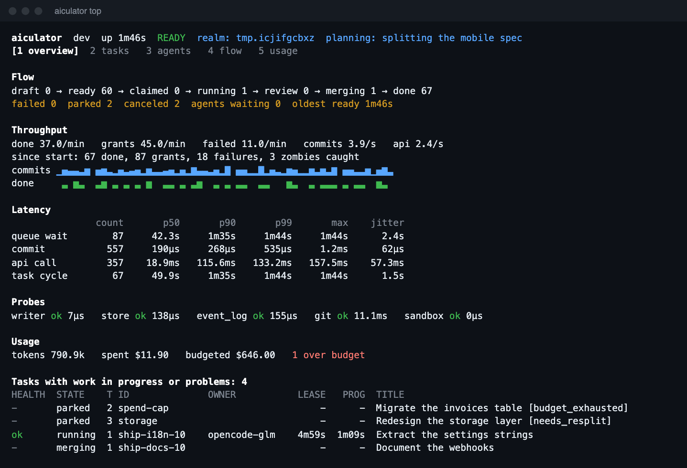
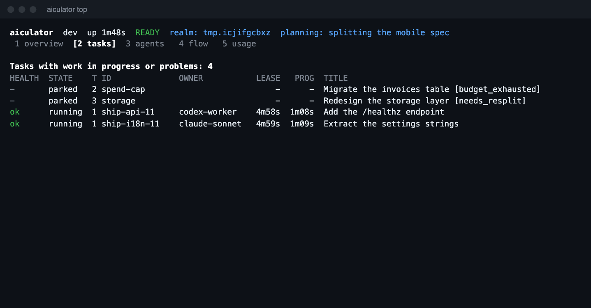
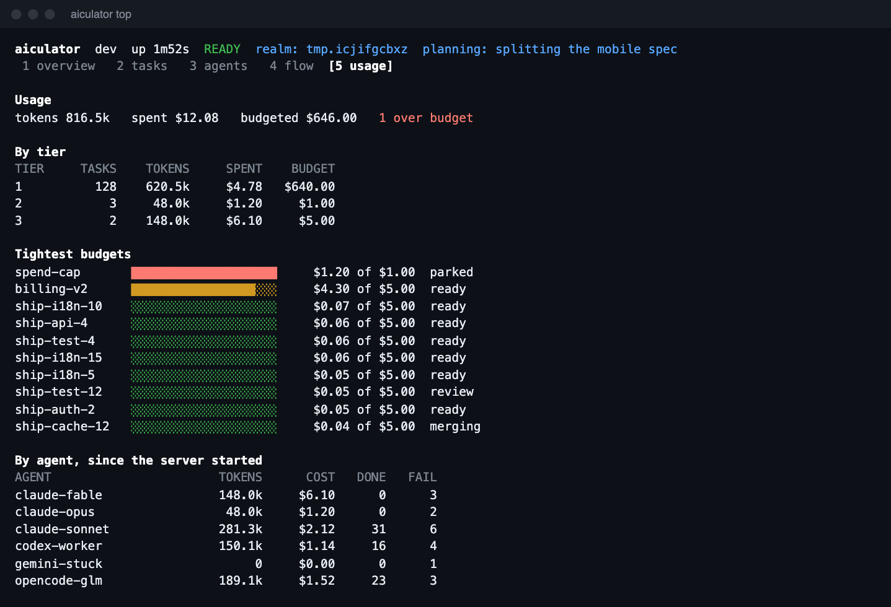
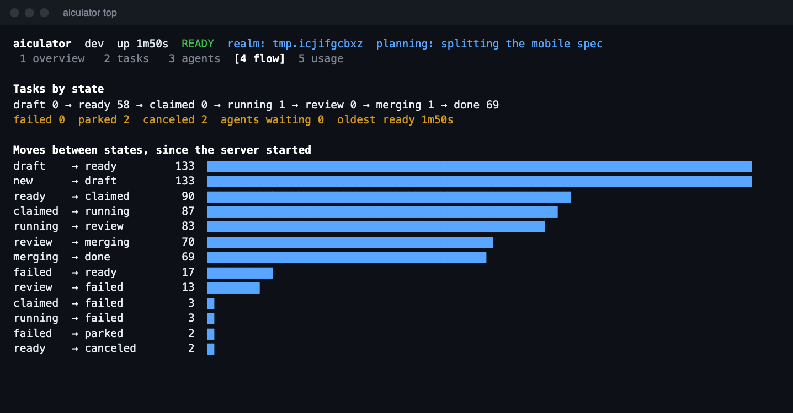
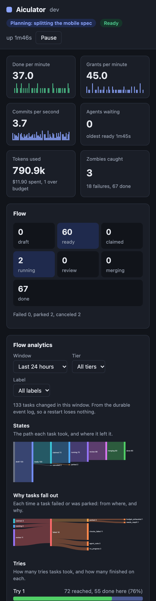

Aiculator¶
Run a queue of coding tasks across AI harnesses, from one binary. Aiculator gives each task to an agent of the right tier, isolates the work in a git worktree, runs the acceptance checks itself, and merges what passes.
An agent saying "done" counts for nothing. The swarm verifies every result on its own.


A real server doing real work, from scripts/screenshots.sh. Agents were driven through the CLI, so the token and cost figures are demo values.
See it work¶
Connect a project and finish a task¶
$ aiculator join --tier 1
Skills are in .agents/skills. Edit them only there.
claude MCP in .mcp.json after a restart; shell works now
Claude Code does not read .agents/skills, so it gets a link. It asks you to approve .mcp.json in interactive sessions.
In a NEW session, ask it to use the swarm-join skill (/swarm-join in Claude Code).
In a session ALREADY OPEN, paste this; it needs no restart:
Read .agents/skills/swarm-join/SKILL.md and follow it. Join as tier 1.
$ aiculator task add --title "Add a health endpoint" \
--spec "Add GET /healthz returning 200." --check "go test ./..."
An agent picks the task up, works in its own worktree, and submits. The swarm then runs go test ./... itself, in a sandbox, on a clean checkout. Only then does the work land on swarm/integration. Your own branches are never touched.
$ aiculator task ls
ID STATE TIER TRIES OWNER TITLE
j1 done 1 1 Create note1.txt
j2 done 1 1 Create note2.txt
j3 done 1 1 Create note3.txt
Watch it live in your terminal¶
aiculator top shows flow, throughput, latency with jitter, health probes, usage and which tasks are in trouble. It runs on its own with no setup.




Or in your browser, including on a phone¶
The dashboard is compiled into the binary, with nothing to host or install. The link carries a read-only token that expires.

Turn a harness you already have open into a worker¶
Paste one line into any session, with no restart:
Or launch sandboxed workers that use no model turns while idle:
SWARM_TOKEN=$(aiculator token --agent worker1 --tier 1) \
aiculator drive --harness claude --agent worker1
Keep waiting agents informed while planning¶
$ aiculator plan begin --ttl 5m
{ "epoch": 1 }
$ aiculator plan update --epoch 1 --ttl 5m --phase "splitting the spec" --expected 1=8 --expected 2=2
Every waiting agent now gets this, so it knows whether to keep waiting or leave:
{
"action": "wait",
"reason": "planning",
"planning": { "epoch": 1, "phase": "splitting the spec", "expected_tasks": { "1": 8, "2": 2 } }
}
Manage skills in one place¶
$ aiculator skill --install 'swarm-*'
swarm-join created .agents/skills/swarm-join
swarm-join linked claude
swarm-join native opencode
$ aiculator skill --list
SKILL VERSION KIND INSTALLED LINT HARNESSES SOURCE
swarm-join 1.0.1 worker yes 0e 0w claude,opencode .agents/skills/swarm-join
swarm-operate 1.0.0 operator yes 0e 0w claude,opencode .agents/skills/swarm-operate
swarm-plan 1.0.0 planner yes 0e 0w claude,opencode .agents/skills/swarm-plan
Write instructions once, with templates¶
Reusable blocks for the rules you keep repeating. This template:
<Subagents use="when" max="4" when="the work splits into independent parts"
not_when="the steps depend on each other" />
<Backoff timeout="120s" retries="2" />
<Flow name="confirm before acting">
<Step n="1" title="Plan" ask="Does this plan look right?"
subagent="Do not ask. Continue, and report your plan with the result.">
List the changes you intend to make.
</Step>
</Flow>
Renders to plain instructions, with the retry waits worked out and a contents list whose line numbers let a model jump straight to a section:
## Contents
- Subagents: line 28, anchor `subagents`
- Commands: timeouts and retries: line 39, anchor `backoff`
## Commands: timeouts and retries
Give every command a time limit of **120s**. A command that hits the limit has failed; do not wait longer.
| Attempt | Wait before it |
|---|---|
| 1 | None |
| 2 | 2s |
| 3 | 4s |
Make a model ask with a list, not a paragraph¶
Templates for single-choice lists, checkboxes, tabbed forms, staged subagent flows, and sections a model keeps current. On a real model, ui-tabs produced one call with three questions:
Language one of: Go (Recommended), TypeScript, Python
Database one of: PostgreSQL (Recommended), SQLite, MongoDB, None
Hosting one of: Fly.io (Recommended), AWS, Render, Self-hosted VPS
See Templates, or the template demo, which uses every feature at once.
Debug it the way you debug Kubernetes¶
$ aiculator task ls -v=6
level=INFO msg=request v=6 component=client method=GET url=http://127.0.0.1:7777/v1/tasks status=200 took=1.1ms bytes=2
$ aiculator debug verbosity 5 --for 10m # Trace a running server, then go back by itself
$ aiculator logs -f --component engine
Levels 0 to 9 mean what they mean in kubectl, and credentials never reach a log at any level. See Debugging.
Add an MCP server to any harness¶
$ aiculator mcp add --harness opencode --tier 2
$ aiculator mcp add --name docs --harness claude -- npx -y docs-server
$ aiculator mcp print --harness codex
Extend it¶
$ aiculator plugin
NAME KIND DESCRIPTION
webdash compiled in Web dashboard, embedded in the binary
$ aiculator events | jq -r 'select(.state == "done") | .id'
Compile plugins in, put a program named aiculator-NAME on your PATH, or follow the event stream from any language. See Plugins.
Why it holds up¶
| What it does | How that was checked |
|---|---|
| Survives crashes. Nothing acknowledged is lost. | 100 real kill -9 crashes in every test run, checking about 65,000 acknowledged writes |
| Never hands a task to two agents. | Porcupine linearizability checks, and TLA+ models of crashes and lost replies |
| Catches zombies and liars. | Fake agents that crash, hang or lie about being done |
| Stays fast. A wake takes 0.32 ms at p99, and a grant with 20,000 tasks queued takes 32 µs. | Performance budgets in CI |
| Contains agents. | Real sandbox escape attempts on macOS and Linux |
| Stays small. Archives are under 11 MiB. | A size budget every build enforces |
Early software
This is version 0.1. Only Claude Code and OpenCode have been run end to end, and several planned features are not built. See Status for exactly what works.
Where next¶
-
Start here
Install it and finish your first task in a few minutes.
-
Have a harness open already?
Join the swarm from that session.
-
Watch it run
Every number on the dashboards, explained.
-
Curious how it stays correct?
See the crash tests and formal models behind it.